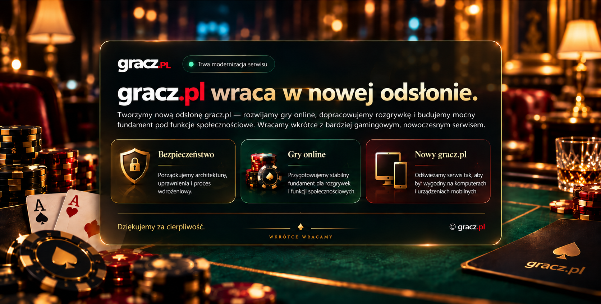

Bezpieczeństwo
Porządkujemy architekturę, uprawnienia i proces wdrożeniowy, aby Gracz.pl miał stabilny fundament.

Budujemy nową odsłonę Gracz.pl jako polski portal dla graczy. Rozwijamy gry online i karciane — m.in. poker treningowy, Tysiąc, warcaby i Gomoku — a także multiplayer, rankingi, turnieje i funkcje społecznościowe. Wracamy z nowocześniejszym i bezpieczniejszym serwisem.
Porządkujemy architekturę, uprawnienia i proces wdrożeniowy, aby Gracz.pl miał stabilny fundament.
Rozwijamy rozgrywki dla graczy: poker treningowy, Tysiąc, warcaby, Gomoku i multiplayer.
Przygotowujemy rankingi, turnieje i funkcje społecznościowe dostępne na komputerach oraz urządzeniach mobilnych.